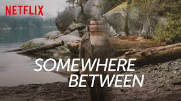

A successful career as a new producer in San Francisco, a powerful yet sensitive husband who serves as the city's district attorney, and a big-hearted 8-year-old daughter who is always quick to make friends but she lives in terror as time moves her closer to the seemingly inevitable moment when an unknown killer murders her little girl. The knowledge of when, where and how her child will be taken haunts her as she tries desperately to keep the child safe, always seeming to fail in averting fate.

The medical drama series focuses on a group of young doctors at Seattle Grace Mercy West Hospital, who began their careers at the facility as interns. One of the young doctors and the show's namesake, Meredith Grey, is the daughter of a famous surgeon. Grey struggles to maintain relationships with her colleagues, particularly the hospital's one-time chief of surgery, Richard Webber, due to a pre-existing relationship between them - Webber and Meredith's mother had a personal relationship when Meredith was young.
The daughter of a teen mother, Jane Villanueva grew up determined not to repeat her mother's mistakes. At 23, her life is on track; Jane is studying to be a teacher and engaged to a handsome detective who supports her decision to remain a virgin until marriage. Then a routine clinic visit flips her life upside down. Inseminated by a specimen meant for a patient in the next room, now-pregnant Jane is in a situation made only more insane when she learns that the sperm donor is her boss, Rafael. As her meticulously planned life gets more like the telenovelas she loves, she faces a lot of complicated decisions about where to go from here
When nuclear Armageddon destroys civilization on Earth, the only survivors are those on the 12 international space station in orbit at the time. Three generations later, the 4,000 survivors living on a space ark of linked stations see their resources dwindle and face draconian measures established to ensure humanity's future. Desperately looking for a solution, the ark's leaders send 100 juvenile prisoners back to the planet to test its habitability. Having always lived in space, the exiles find the planet fascinating and terrifying, but with the fate of the human race in their hands, they must forge a path into the unknown